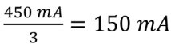
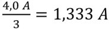

(1) Einwirkungen gefahrbringender Ströme können vermieden werden, wenn z. B. in unterirdischen Hohlräumen die Zündleitungen und elektrischen Leitungen auf verschiedenen Seiten des Hohlraumes verlegt sind oder bei anderen Sprengarbeiten für Zündleitungen entsprechend große Abstände von elektrischen Anlagen und Betriebsmitteln eingehalten werden.
(2) In der Praxis werden mitunter Sprengungen in der Nähe von Starkstrom-Freileitungen oder Leitungen elektrischer Bahnen durchgeführt. Eine gefahrbringende Einwirkung durch Ströme von Starkstrom-Freileitungen mit Nennspannungen über 1 kV und Leitungen elektrischer Bahnen ist nicht gegeben, wenn die Sicherheitsabstände der nachfolgenden Tabelle eingehalten werden:
| Zünderart | Zünder Klasse II | Zünder Klasse IV | |
|---|---|---|---|
| Leitungsart | |||
| Starkstrom-Freileitungen mit Holzmasten | 10 m | 10 m | |
| Starkstrom-Freileitungen mit Stahlbeton- oder Stahlmasten | 50 m | 10 m | |
| Leitungen elektrischer Bahnen | 200 m | 100 m | |
(3) Unterschreitungen der in der Tabelle genannten Abstände können zugelassen werden, wenn in diesem Bereich durch Streustrommessungen nachgewiesen wird, dass ein Drittel der Streustromsicherheitsgrenze der Zünder:

oder
nicht überschritten wird.
Darüber hinaus sind gegebenenfalls zusätzliche Maßnahmen erforderlich:
(4) Bei Anwendung dieser Maßnahmen dürfen die Sicherheitsabstände gemäß obiger Tabelle halbiert werden. Ansonsten sind andere Zündarten (nicht elektrisch, elektronisch) einzusetzen.